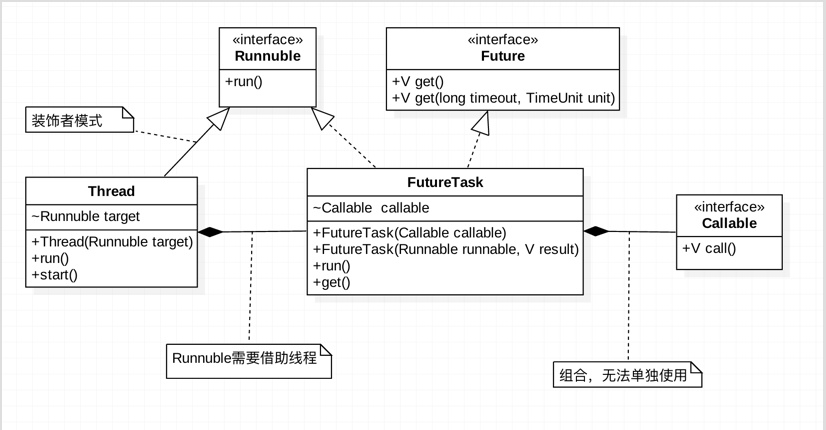

<!DOCTYPE html>
<html lang="zh-CN">
<head><meta name="generator" content="Hexo 3.8.0">

    <!--[if lt IE 9]>
        <style>body {display: none; background: none !important} </style>
        <meta http-equiv="Refresh" Content="0; url=//outdatedbrowser.com/" />
    <![endif]-->

<meta charset="utf-8">
<meta http-equiv="X-UA-Compatible" content="IE=edge, chrome=1">
<meta name="viewport" content="width=device-width, initial-scale=1, maximum-scale=1, user-scalable=no">
<meta name="format-detection" content="telephone=no">
<meta name="author" content="康兴华">


<meta name="description" content="在Java中，开启一个线程的唯一方式是，通过Thread的start方法，并且在线程中执行的Runnable的run方法。无论是线程池还是接下来要介绍的Callable，Future还是线程池，最核心最根本的还是调用的Thread.start()-&amp;gt;Runnable.run(),其他的类的出现可以认为是更方便的使用Thread和Runnable，以此为核心更容易理解Java的并发框架。">
<meta name="keywords" content="笔记">
<meta property="og:type" content="article">
<meta property="og:title" content="Callable和Future、FutureTask的使用">
<meta property="og:url" content="http://kxh.ink/2018/06/21/Callable-Future-FutureTask/index.html">
<meta property="og:site_name" content="康兴华">
<meta property="og:description" content="在Java中，开启一个线程的唯一方式是，通过Thread的start方法，并且在线程中执行的Runnable的run方法。无论是线程池还是接下来要介绍的Callable，Future还是线程池，最核心最根本的还是调用的Thread.start()-&amp;gt;Runnable.run(),其他的类的出现可以认为是更方便的使用Thread和Runnable，以此为核心更容易理解Java的并发框架。">
<meta property="og:locale" content="zh-CN">
<meta property="og:image" content="http://kxh.ink/2018/06/21/Callable-Future-FutureTask/006tKfTcjw1f762nmu5r7j30my0bydhp.jpg">
<meta property="og:updated_time" content="2018-10-22T06:34:56.104Z">
<meta name="twitter:card" content="summary">
<meta name="twitter:title" content="Callable和Future、FutureTask的使用">
<meta name="twitter:description" content="在Java中，开启一个线程的唯一方式是，通过Thread的start方法，并且在线程中执行的Runnable的run方法。无论是线程池还是接下来要介绍的Callable，Future还是线程池，最核心最根本的还是调用的Thread.start()-&amp;gt;Runnable.run(),其他的类的出现可以认为是更方便的使用Thread和Runnable，以此为核心更容易理解Java的并发框架。">
<meta name="twitter:image" content="http://kxh.ink/2018/06/21/Callable-Future-FutureTask/006tKfTcjw1f762nmu5r7j30my0bydhp.jpg">

<link rel="apple-touch-icon" href="/apple-touch-icon.png">


    <link rel="alternate" href="/atom.xml" title="康兴华" type="application/atom+xml">


    <link rel="shortcut icon" href="/favicon.png">


    <link href="//cdn.bootcss.com/animate.css/3.5.1/animate.min.css" rel="stylesheet">


    <link href="//cdn.bootcss.com/fancybox/2.1.5/jquery.fancybox.min.css" rel="stylesheet">


    <script src="//cdn.bootcss.com/pace/1.0.2/pace.min.js"></script>
    <link href="//cdn.bootcss.com/pace/1.0.2/themes/blue/pace-theme-minimal.css" rel="stylesheet">


<link rel="stylesheet" href="/css/style.css">


<link href="//cdn.bootcss.com/font-awesome/4.6.3/css/font-awesome.min.css" rel="stylesheet">


<title>Callable和Future、FutureTask的使用 | 康兴华</title>

<script src="//cdn.bootcss.com/jquery/2.2.4/jquery.min.js"></script>
<script src="//cdn.bootcss.com/clipboard.js/1.5.10/clipboard.min.js"></script>

<script>
    var yiliaConfig = {
        fancybox: true,
        animate: true,
        isHome: false,
        isPost: true,
        isArchive: false,
        isTag: false,
        isCategory: false,
        fancybox_js: "//cdn.bootcss.com/fancybox/2.1.5/jquery.fancybox.min.js",
        scrollreveal: "//cdn.bootcss.com/scrollReveal.js/3.1.4/scrollreveal.min.js",
        search: true
    }
</script>


    <script> yiliaConfig.jquery_ui = [false]; </script>


    <script> yiliaConfig.rootUrl = "\/";</script>


</head></html>
<body>
  <div id="container">
    <div class="left-col">
    <div class="overlay"></div>
<div class="intrude-less">
    <header id="header" class="inner">
        <a href="/" class="profilepic">
            
        </a>
        <hgroup>
          <h1 class="header-author"><a href="/">康兴华</a></h1>
        </hgroup>

        

        
            <form id="search-form">
            <input type="text" id="local-search-input" name="q" placeholder="search..." class="search form-control" autocomplete="off" autocorrect="off" searchonload="true">
            <i class="fa fa-times" onclick="resetSearch()"></i>
            </form>
            <div id="local-search-result"></div>
            <p class="no-result">No results found <i class="fa fa-spinner fa-pulse"></i></p>
        


        
            <div id="switch-btn" class="switch-btn">
                <div class="icon">
                    <div class="icon-ctn">
                        <div class="icon-wrap icon-house" data-idx="0">
                            <div class="birdhouse"></div>
                            <div class="birdhouse_holes"></div>
                        </div>
                        <div class="icon-wrap icon-ribbon hide" data-idx="1">
                            <div class="ribbon"></div>
                        </div>
                        
                        <div class="icon-wrap icon-link hide" data-idx="2">
                            <div class="loopback_l"></div>
                            <div class="loopback_r"></div>
                        </div>
                        
                        
                        <div class="icon-wrap icon-me hide" data-idx="3">
                            <div class="user"></div>
                            <div class="shoulder"></div>
                        </div>
                        
                    </div>
                    
                </div>
                <div class="tips-box hide">
                    <div class="tips-arrow"></div>
                    <ul class="tips-inner">
                        <li>菜单</li>
                        <li>标签</li>
                        
                        <li>友情链接</li>
                        
                        
                        <li>关于我</li>
                        
                    </ul>
                </div>
            </div>
        

        <div id="switch-area" class="switch-area">
            <div class="switch-wrap">
                <section class="switch-part switch-part1">
                    <nav class="header-menu">
                        <ul>
                        
                            <li><a href="/">主页</a></li>
                        
                            <li><a href="/archives/">所有文章</a></li>
                        
                            <li><a href="/tags/">标签云</a></li>
                        
                            <li><a href="/about/">关于我</a></li>
                        
                        </ul>
                    </nav>
                    <nav class="header-nav">
                        <ul class="social">
                            
                                <a class="fa Email" href="mailto:kangxinghua@gmail.com" title="Email"></a>
                            
                                <a class="fa GitHub" href="https://github.com/kangxinghua" title="GitHub"></a>
                            
                                <a class="fa RSS" href="/atom.xml" title="RSS"></a>
                            
                        </ul>
                    </nav>
                </section>
                
                
                <section class="switch-part switch-part2">
                    <div class="widget tagcloud" id="js-tagcloud">
                        <ul class="tag-list"><li class="tag-list-item"><a class="tag-list-link" href="/tags/Java-并发编程实战/">Java 并发编程实战</a></li><li class="tag-list-item"><a class="tag-list-link" href="/tags/笔记/">笔记</a></li></ul>
                    </div>
                </section>
                
                
                
                <section class="switch-part switch-part3">
                    <div id="js-friends">
                    
                      <a class="main-nav-link switch-friends-link" href="https://hexo.io">Hexo</a>
                    
                      <a class="main-nav-link switch-friends-link" href="https://pages.github.com/">GitHub</a>
                    
                      <a class="main-nav-link switch-friends-link" href="http://moxfive.xyz/">MOxFIVE</a>
                    
                    </div>
                </section>
                

                
                
                <section class="switch-part switch-part4">
                
                    <div id="js-aboutme">专注于前端</div>
                </section>
                
            </div>
        </div>
    </header>                
</div>
    </div>
    <div class="mid-col">
      <nav id="mobile-nav">
      <div class="overlay">
          <div class="slider-trigger"></div>
          <h1 class="header-author js-mobile-header hide"><a href="/" title="回到主页">康兴华</a></h1>
      </div>
    <div class="intrude-less">
        <header id="header" class="inner">
            <a href="/" class="profilepic">
                
            </a>
            <hgroup>
              <h1 class="header-author"><a href="/" title="回到主页">康兴华</a></h1>
            </hgroup>
            
            <nav class="header-menu">
                <ul>
                
                    <li><a href="/">主页</a></li>
                
                    <li><a href="/archives/">所有文章</a></li>
                
                    <li><a href="/tags/">标签云</a></li>
                
                    <li><a href="/about/">关于我</a></li>
                
                <div class="clearfix"></div>
                </ul>
            </nav>
            <nav class="header-nav">
                        <ul class="social">
                            
                                <a class="fa Email" target="_blank" href="mailto:kangxinghua@gmail.com" title="Email"></a>
                            
                                <a class="fa GitHub" target="_blank" href="https://github.com/kangxinghua" title="GitHub"></a>
                            
                                <a class="fa RSS" target="_blank" href="/atom.xml" title="RSS"></a>
                            
                        </ul>
            </nav>
        </header>                
    </div>
    <link class="menu-list" tags="标签" friends="友情链接" about="关于我">
</nav>
      <div class="body-wrap"><article id="post-Callable-Future-FutureTask" class="article article-type-post" itemscope="" itemprop="blogPost">
  
    <div class="article-meta">
      <a href="/2018/06/21/Callable-Future-FutureTask/" class="article-date">
      <time datetime="2018-06-21T10:19:09.000Z" itemprop="datePublished">2018-06-21</time>
</a>


    </div>
  
  <div class="article-inner">
    
      <input type="hidden" class="isFancy">
    
    
      <header class="article-header">
        
  
    <h1 class="article-title" itemprop="name">
      Callable和Future、FutureTask的使用
    </h1>
  

      </header>
      
      <div class="article-info article-info-post">
        

        
    <div class="article-tag tagcloud">
        <ul class="article-tag-list"><li class="article-tag-list-item"><a class="article-tag-list-link" href="/tags/笔记/">笔记</a></li></ul>
    </div>

        <div class="clearfix"></div>
      </div>
      
    
    <div class="article-entry" itemprop="articleBody">
      
          
        <p>在Java中，开启一个线程的唯一方式是，通过Thread的start方法，并且在线程中执行的Runnable的run方法。无论是线程池还是接下来要介绍的Callable，Future还是线程池，最核心最根本的还是调用的Thread.start()-&gt;Runnable.run(),其他的类的出现可以认为是更方便的使用Thread和Runnable，以此为核心更容易理解Java的并发框架。</p>
<a id="more"></a>
<p>虽然Thread和Runnable类使得多线程编程简单直接，但是有一个缺陷就是：在执行完任务之后无法获得执行结果。如果需要获得执行结果，就必须通过共享变量或者使用线程通信的方式来达到效果，这样使用起来就比较麻烦。因此从JDK1.5开始，有了一系列的类的出现来解决这些问题，如Callable和Future，FutureTask以及线程池《<a href="/2018/05/04/ThreadPoolPrinciple/">从使用到原理学习Java线程池</a>》。</p>
<p>而自从Java 1.5开始，就是提供Callable和Future以及FutureTask，通过它们可以在任务执行完毕之后得到任务执行结果。</p>
<h2 id="实现原理"><a href="#实现原理" class="headerlink" title="实现原理"></a>实现原理</h2><p><strong>Thread和Runnable</strong></p>
<p>首先看Thread和Runnable的实现多线程任务的原理。<br>以下是简化后的代码，为了方便理解。<br><figure class="highlight java"><table><tr><td class="gutter"><pre><span class="line">1</span><br><span class="line">2</span><br><span class="line">3</span><br><span class="line">4</span><br><span class="line">5</span><br><span class="line">6</span><br><span class="line">7</span><br><span class="line">8</span><br><span class="line">9</span><br><span class="line">10</span><br><span class="line">11</span><br><span class="line">12</span><br><span class="line">13</span><br><span class="line">14</span><br><span class="line">15</span><br><span class="line">16</span><br><span class="line">17</span><br><span class="line">18</span><br><span class="line">19</span><br><span class="line">20</span><br></pre></td><td class="code"><pre><span class="line"><span class="keyword">public</span> <span class="class"><span class="keyword">class</span> <span class="title">Thread</span> <span class="keyword">implements</span> <span class="title">Runnable</span> </span>&#123;</span><br><span class="line">    Runnable target;</span><br><span class="line">	</span><br><span class="line">	<span class="function"><span class="keyword">public</span> <span class="title">Thread</span><span class="params">(Runnable runnable)</span> </span>&#123;</span><br><span class="line">	</span><br><span class="line">		target = Runnable;</span><br><span class="line">		 </span><br><span class="line">		<span class="comment">//省略其他初始化线程的任务</span></span><br><span class="line">	&#125;</span><br><span class="line">	</span><br><span class="line">	<span class="function"><span class="keyword">public</span> <span class="keyword">void</span> <span class="title">start</span><span class="params">()</span> </span>&#123;</span><br><span class="line">		 nativeCreate(<span class="keyword">this</span>, stackSize, daemon);<span class="comment">//native方法开启多线程，并调用run方法</span></span><br><span class="line">	&#125;</span><br><span class="line">	</span><br><span class="line">	<span class="function"><span class="keyword">public</span> <span class="keyword">void</span> <span class="title">run</span><span class="params">()</span> </span>&#123;</span><br><span class="line">	    <span class="keyword">if</span> (target != <span class="keyword">null</span>) &#123;</span><br><span class="line">	        target.run();</span><br><span class="line">	    &#125;</span><br><span class="line">	&#125;</span><br><span class="line">&#125;</span><br></pre></td></tr></table></figure></p>
<p>可以看出target是一个Runnable对象，通过一个典型的装饰者模式来扩展Runnable，如果不传入，默认为null，需要自己实现run方法在新线程里任务，否则线程不会做任何事情就结束。所以无论如何怎么变化，最终都是Thread的start方法开启新的线程，run方法在这个新开启的线程执行任务，当然run方法也是可以单独调用，但是所在的线程是调用者的线程。</p>
<blockquote>
<p>装饰者模式的典型特点：装饰后的类和被装饰的类，类型不变(继承Runnable)，提供新的行为，方法(start()等)。</p>
</blockquote>
<p><strong>Callable和Future，FutureTask</strong></p>
<p>先通过URML图来看它们和Thread，Runnable之间的关系：<br> </p>
<p><em>Callable</em>与Runnable的功能大致相似，Callable中有一个call()函数，<strong>但是call()函数有返回值</strong>，而Runnable的run()函数不能将结果返回给客户程序。</p>
<p><em>Future</em>就是对Callable任务的执行结果进行取消、查询是否完成、获取结果、设置结果操作。其中的get()方法就是用来得到Callable的call()结果的。</p>
<p><em>FutureTask</em>是Future的具体实现类，实现了get()等方法来对控制Callable的行为，又因为Thread只能执行Runnable，所以FutureTask实现了Runnable接口。</p>
<p>因为FutureTask需要在Thread中执行，所以需要在run()方法中完成具体的实现：<br><figure class="highlight java"><table><tr><td class="gutter"><pre><span class="line">1</span><br><span class="line">2</span><br><span class="line">3</span><br><span class="line">4</span><br><span class="line">5</span><br><span class="line">6</span><br><span class="line">7</span><br><span class="line">8</span><br><span class="line">9</span><br><span class="line">10</span><br></pre></td><td class="code"><pre><span class="line"><span class="comment">//简化后的代码，为了方便理解</span></span><br><span class="line"><span class="function"><span class="keyword">public</span> <span class="keyword">void</span> <span class="title">run</span><span class="params">()</span> </span>&#123;</span><br><span class="line">    Callable&lt;V&gt; c = callable;</span><br><span class="line">    </span><br><span class="line">    <span class="keyword">if</span> (c != <span class="keyword">null</span> &amp;&amp; state == NEW) &#123;</span><br><span class="line">        V result;</span><br><span class="line">        result = c.call();</span><br><span class="line">        set(result);</span><br><span class="line">    &#125;</span><br><span class="line">&#125;</span><br></pre></td></tr></table></figure></p>
<p>通过get方法来获取结果，get()是哥阻塞方法，直到结果返回，或者中断发生。还可以通过get(long timeout, TimeUnit unit)方法控制等待结果的最大时间。</p>
<figure class="highlight java"><table><tr><td class="gutter"><pre><span class="line">1</span><br><span class="line">2</span><br><span class="line">3</span><br><span class="line">4</span><br><span class="line">5</span><br><span class="line">6</span><br></pre></td><td class="code"><pre><span class="line"><span class="function"><span class="keyword">public</span> V <span class="title">get</span><span class="params">()</span> <span class="keyword">throws</span> InterruptedException, ExecutionException </span>&#123;</span><br><span class="line">    <span class="keyword">int</span> s = state;</span><br><span class="line">    <span class="keyword">if</span> (s &lt;= COMPLETING)</span><br><span class="line">        s = awaitDone(<span class="keyword">false</span>, <span class="number">0L</span>);<span class="comment">//阻塞等待</span></span><br><span class="line">    <span class="keyword">return</span> report(s);</span><br><span class="line">&#125;</span><br></pre></td></tr></table></figure>
<p>可以看出FutureTask的run方法实际的任务是在Callable的call中完成，FutureTask的实现方式采用了适配器模式来完成。</p>
<p>如果构造函数传入的是Runnable，则通过Executors的静态函数callable(Runnable task,…)将Runnable转换为Callable类型：</p>
<figure class="highlight java"><table><tr><td class="gutter"><pre><span class="line">1</span><br><span class="line">2</span><br><span class="line">3</span><br><span class="line">4</span><br><span class="line">5</span><br><span class="line">6</span><br></pre></td><td class="code"><pre><span class="line"> <span class="function"><span class="keyword">public</span> <span class="keyword">static</span>  Callable <span class="title">callable</span><span class="params">(Runnable task, T result)</span> </span>&#123; </span><br><span class="line"> </span><br><span class="line">    <span class="keyword">if</span> (task == <span class="keyword">null</span>) <span class="keyword">throw</span> <span class="keyword">new</span> NullPointerException(); </span><br><span class="line">    </span><br><span class="line">    <span class="keyword">return</span> <span class="keyword">new</span> RunnableAdapter(task, result); </span><br><span class="line">&#125;</span><br></pre></td></tr></table></figure>
<blockquote>
<p>适配模式的典型特点：包装另一个对象(包装了Callable)，提供不同的接口(Runnable接口)</p>
</blockquote>
<p><em>Callable</em>和<em>Future</em>，<em>FutureTask</em>经常容易让人记忆混乱，理解后就知道了其实Future和FutureTask就是用来将Callable包装成一个Runnable,这样才能够在Thread中执行，同时提供将结果返回的功能，三个类总是同时出现，整体理解为是一个可以得到返回结果的Runnable。</p>
<h2 id="使用"><a href="#使用" class="headerlink" title="使用"></a>使用</h2><p>那么怎么使用这些类呢？由于FutureTask实现了Runnable，因此它既可以通过Thread包装来直接执行，也可以提交给ExecutorService来执行，在Thread中，就像使用Runnable一样。</p>
<p>示例代码如下：</p>
<figure class="highlight java"><table><tr><td class="gutter"><pre><span class="line">1</span><br><span class="line">2</span><br><span class="line">3</span><br><span class="line">4</span><br><span class="line">5</span><br><span class="line">6</span><br><span class="line">7</span><br><span class="line">8</span><br><span class="line">9</span><br><span class="line">10</span><br><span class="line">11</span><br><span class="line">12</span><br><span class="line">13</span><br><span class="line">14</span><br><span class="line">15</span><br><span class="line">16</span><br><span class="line">17</span><br><span class="line">18</span><br><span class="line">19</span><br><span class="line">20</span><br><span class="line">21</span><br><span class="line">22</span><br><span class="line">23</span><br><span class="line">24</span><br><span class="line">25</span><br><span class="line">26</span><br><span class="line">27</span><br><span class="line">28</span><br><span class="line">29</span><br><span class="line">30</span><br><span class="line">31</span><br><span class="line">32</span><br><span class="line">33</span><br><span class="line">34</span><br><span class="line">35</span><br><span class="line">36</span><br><span class="line">37</span><br><span class="line">38</span><br><span class="line">39</span><br><span class="line">40</span><br><span class="line">41</span><br><span class="line">42</span><br><span class="line">43</span><br><span class="line">44</span><br><span class="line">45</span><br><span class="line">46</span><br><span class="line">47</span><br><span class="line">48</span><br><span class="line">49</span><br><span class="line">50</span><br><span class="line">51</span><br><span class="line">52</span><br><span class="line">53</span><br><span class="line">54</span><br><span class="line">55</span><br><span class="line">56</span><br><span class="line">57</span><br><span class="line">58</span><br><span class="line">59</span><br><span class="line">60</span><br><span class="line">61</span><br><span class="line">62</span><br><span class="line">63</span><br><span class="line">64</span><br><span class="line">65</span><br><span class="line">66</span><br><span class="line">67</span><br><span class="line">68</span><br><span class="line">69</span><br><span class="line">70</span><br><span class="line">71</span><br><span class="line">72</span><br><span class="line">73</span><br><span class="line">74</span><br><span class="line">75</span><br><span class="line">76</span><br><span class="line">77</span><br><span class="line">78</span><br><span class="line">79</span><br></pre></td><td class="code"><pre><span class="line"><span class="keyword">public</span> <span class="class"><span class="keyword">class</span> <span class="title">FutureTest</span> </span>&#123;    </span><br><span class="line">    </span><br><span class="line">    <span class="function"><span class="keyword">public</span> <span class="keyword">static</span> <span class="keyword">void</span> <span class="title">main</span><span class="params">(String[] args)</span> </span>&#123;                </span><br><span class="line">        FutureTest futureTest = <span class="keyword">new</span> FutureTest();            </span><br><span class="line">        futureTest.useExecutor();            </span><br><span class="line">        futureTest.useThread();  </span><br><span class="line">    &#125;  </span><br><span class="line">      </span><br><span class="line">    <span class="function"><span class="keyword">private</span> <span class="keyword">void</span> <span class="title">useExecutor</span><span class="params">()</span> </span>&#123;      </span><br><span class="line">      </span><br><span class="line">        SumTask sumTask = <span class="keyword">new</span> SumTask(<span class="number">1000</span>);                </span><br><span class="line">        ExecutorService executor = Executors.newCachedThreadPool();    </span><br><span class="line">                </span><br><span class="line">        FutureTask&lt;Integer&gt; futureTask = <span class="keyword">new</span> FutureTask&lt;Integer&gt;(sumTask);    </span><br><span class="line">                </span><br><span class="line">        executor.submit(futureTask);        </span><br><span class="line">        executor.shutdown();  </span><br><span class="line">             </span><br><span class="line">        <span class="keyword">try</span> &#123;            </span><br><span class="line">            System.out.println(Thread.currentThread().getName()+<span class="string">"::useExecutor运行结果"</span> + futureTask.get());        </span><br><span class="line">        &#125; <span class="keyword">catch</span> (InterruptedException e) &#123;            </span><br><span class="line">            e.printStackTrace();      </span><br><span class="line">        &#125; <span class="keyword">catch</span> (ExecutionException e) &#123;            </span><br><span class="line">            e.printStackTrace();       </span><br><span class="line">        &#125;    </span><br><span class="line">    &#125;  </span><br><span class="line">     </span><br><span class="line">    <span class="function"><span class="keyword">private</span> <span class="keyword">void</span> <span class="title">useThread</span><span class="params">()</span> </span>&#123;        </span><br><span class="line">        SumTask sumTask = <span class="keyword">new</span> SumTask(<span class="number">500</span>);          </span><br><span class="line">            </span><br><span class="line">        FutureTask&lt;Integer&gt; futureTask = <span class="keyword">new</span> FutureTask&lt;Integer&gt;(sumTask) &#123;    </span><br><span class="line">            <span class="meta">@Override</span>    </span><br><span class="line">            <span class="function"><span class="keyword">protected</span> <span class="keyword">void</span> <span class="title">done</span><span class="params">()</span> </span>&#123;        </span><br><span class="line">                <span class="keyword">super</span>.done();        </span><br><span class="line">                <span class="keyword">try</span> &#123;            </span><br><span class="line">                <span class="comment">// 这是在后台线程                   </span></span><br><span class="line">                System.out.println(Thread.currentThread().getName()+<span class="string">"::useThread运行结果"</span> + get());        </span><br><span class="line">                &#125; <span class="keyword">catch</span> (InterruptedException e) &#123;            </span><br><span class="line">                    e.printStackTrace();        </span><br><span class="line">                &#125; <span class="keyword">catch</span> (ExecutionException e) &#123;            </span><br><span class="line">                    e.printStackTrace();        </span><br><span class="line">                &#125;    </span><br><span class="line">           &#125;</span><br><span class="line">        &#125;;          </span><br><span class="line">          </span><br><span class="line">        Thread thread = <span class="keyword">new</span> Thread(futureTask);       </span><br><span class="line">        thread.start();   </span><br><span class="line">            </span><br><span class="line">        <span class="keyword">try</span> &#123; </span><br><span class="line">        	  <span class="comment">//这是在主线程，会阻塞           </span></span><br><span class="line">            System.out.println(Thread.currentThread().getName()+<span class="string">"::useThread运行结果"</span> + futureTask.get().getName());       </span><br><span class="line">        &#125; <span class="keyword">catch</span> (InterruptedException e) &#123;            </span><br><span class="line">            e.printStackTrace();       </span><br><span class="line">        &#125; <span class="keyword">catch</span> (ExecutionException e) &#123;            </span><br><span class="line">            e.printStackTrace();       </span><br><span class="line">        &#125;    </span><br><span class="line">    &#125;        </span><br><span class="line">    </span><br><span class="line">  <span class="class"><span class="keyword">class</span> <span class="title">SumTask</span> <span class="keyword">implements</span> <span class="title">Callable</span>&lt;<span class="title">Integer</span>&gt; </span>&#123;        </span><br><span class="line">      <span class="keyword">int</span> number;   </span><br><span class="line">           </span><br><span class="line">      <span class="function"><span class="keyword">public</span> <span class="title">SumTask</span><span class="params">(<span class="keyword">int</span> num)</span> </span>&#123;            </span><br><span class="line">          <span class="keyword">this</span>.number = num;      </span><br><span class="line">      &#125;       </span><br><span class="line">       </span><br><span class="line">      <span class="meta">@Override</span>       </span><br><span class="line">      <span class="function"><span class="keyword">public</span> Integer <span class="title">call</span><span class="params">()</span> <span class="keyword">throws</span> Exception </span>&#123;</span><br><span class="line">                  </span><br><span class="line">          System.out.println(Thread.currentThread().getName());            </span><br><span class="line">          Thread.sleep(<span class="number">5000</span>);  </span><br><span class="line">                    </span><br><span class="line">          <span class="keyword">int</span> sum = <span class="number">0</span>;            </span><br><span class="line">          <span class="keyword">for</span> (<span class="keyword">int</span> i = <span class="number">0</span>; i &lt; number; i++) &#123;                </span><br><span class="line">              sum += i;            </span><br><span class="line">          &#125;           </span><br><span class="line">          <span class="keyword">return</span> sum;        </span><br><span class="line">      &#125;    </span><br><span class="line">   &#125;</span><br><span class="line">&#125;</span><br></pre></td></tr></table></figure>
<p>结果：</p>
<blockquote>
<p>pool-1-thread-1<br>main::useExecutor运行结果499500<br>Thread-0<br>main::useThread运行结果124750<br>Thread-0::useThread运行结果124750</p>
</blockquote>
<p>FutureTask.get()是阻塞的，useExecutor()和useThread()也会阻塞。这里只是说明FutureTask.get()所在的线程是调用者所在的线程，在Android中使用的话，一般是在FutureTask的done方法中get，这时get就是在后台线程调用了，然后通过Handler通知到UI或其他线程。</p>

      
    </div>
    
  </div>
  
    
    <div class="copyright">
        <p><span>本文标题:</span><a href="/2018/06/21/Callable-Future-FutureTask/">Callable和Future、FutureTask的使用</a></p>
        <p><span>文章作者:</span><a href="/" title="回到主页">康兴华</a></p>
        <p><span>发布时间:</span>2018-06-21, 18:19:09</p>
        <p><span>最后更新:</span>2018-10-22, 14:34:56</p>
        <p>
            <span>原始链接:</span><a class="post-url" href="/2018/06/21/Callable-Future-FutureTask/" title="Callable和Future、FutureTask的使用">http://kxh.ink/2018/06/21/Callable-Future-FutureTask/</a>
            <span class="copy-path" data-clipboard-text="原文: http://kxh.ink/2018/06/21/Callable-Future-FutureTask/　　作者: 康兴华" title="点击复制文章链接"><i class="fa fa-clipboard"></i></span>
            <script> var clipboard = new Clipboard('.copy-path'); </script>
        </p>
        <p>
            <span>许可协议:</span><i class="fa fa-creative-commons"></i> <a rel="license" href="http://creativecommons.org/licenses/by-nc-sa/4.0/" title="CC BY-NC-SA 4.0 International" target="_blank">"署名-非商用-相同方式共享 4.0"</a> 转载请保留原文链接及作者。
        </p>
    </div>


    <nav id="article-nav">
        
            <div id="article-nav-newer" class="article-nav-title">
                <a href="/2018/06/24/Lock-Condition/">
                    显示锁（Lock）及Condition的学习与使用
                </a>
            </div>
        
        
            <div id="article-nav-older" class="article-nav-title">
                <a href="/2018/05/04/ThreadPoolPrinciple/">
                    从使用到原理学习Java线程池
                </a>
            </div>
        
    </nav>

  
</article>

    <div id="toc" class="toc-article">
        <strong class="toc-title">文章目录</strong>
        
            <ol class="toc"><li class="toc-item toc-level-2"><a class="toc-link" href="#实现原理"><span class="toc-number">1.</span> <span class="toc-text">实现原理</span></a></li><li class="toc-item toc-level-2"><a class="toc-link" href="#使用"><span class="toc-number">2.</span> <span class="toc-text">使用</span></a></li></ol>
        
    </div>
    <style>
        .left-col .switch-btn,
        .left-col .switch-area {
            display: none;
        }
        .toc-level-3 i,
        .toc-level-3 ol {
            display: none !important;
        }
    </style>

    <input type="button" id="tocButton" value="隐藏目录" title="点击按钮隐藏或者显示文章目录">

    <script>
        yiliaConfig.toc = ["隐藏目录", "显示目录", !!"false"];
    </script>


    
<div class="share">
    
        <div class="bdsharebuttonbox">
            <a href="#" class="fa fa-twitter bds_twi" data-cmd="twi" title="分享到推特"></a>
            <a href="#" class="fa fa-weibo bds_tsina" data-cmd="tsina" title="分享到新浪微博"></a>
            <a href="#" class="fa fa-qq bds_sqq" data-cmd="sqq" title="分享给 QQ 好友"></a>
            <a href="#" class="fa fa-files-o bds_copy" data-cmd="copy" title="复制网址"></a>
            <a href="#" class="fa fa fa-envelope-o bds_mail" data-cmd="mail" title="通过邮件分享"></a>
            <a href="#" class="fa fa-weixin bds_weixin" data-cmd="weixin" title="生成文章二维码"></a>
            <a href="#" class="fa fa-share-alt bds_more" data-cmd="more"></a>
        </div>
        <script>
            window._bd_share_config={
                "common":{"bdSnsKey":{},"bdText":"Callable和Future、FutureTask的使用　| 康兴华　","bdMini":"2","bdMiniList":false,"bdPic":"","bdStyle":"0","bdSize":"24"},"share":{}};with(document)0[(getElementsByTagName('head')[0]||body).appendChild(createElement('script')).src='http://bdimg.share.baidu.com/static/api/js/share.js?v=89860593.js?cdnversion='+~(-new Date()/36e5)];
        </script>
    

    
</div>


    


    <div class="scroll" id="post-nav-button">
        
            <a href="/2018/06/24/Lock-Condition/" title="上一篇: 显示锁（Lock）及Condition的学习与使用">
                <i class="fa fa-angle-left"></i>
            </a>
        

        <a title="文章列表"><i class="fa fa-bars"></i><i class="fa fa-times"></i></a>

        
            <a href="/2018/05/04/ThreadPoolPrinciple/" title="下一篇: 从使用到原理学习Java线程池">
                <i class="fa fa-angle-right"></i>
            </a>
        
    </div>

    <ul class="post-list"><li class="post-list-item"><a class="post-list-link" href="/2018/11/08/why-is-redis/">为什么分布式一定要有redis?</a></li><li class="post-list-item"><a class="post-list-link" href="/2018/11/02/mysql-transaction/README/">mysql-transaction/README</a></li><li class="post-list-item"><a class="post-list-link" href="/2018/11/02/mysql-transaction/">MySQL 四种事务隔离级的说明</a></li><li class="post-list-item"><a class="post-list-link" href="/2018/11/01/how-to-calculate-threadpool-size/README/">how-to-calculate-threadpool-size/README</a></li><li class="post-list-item"><a class="post-list-link" href="/2018/10/31/how-to-calculate-threadpool-size/">如何合理地估算线程池大小？</a></li><li class="post-list-item"><a class="post-list-link" href="/2018/09/19/HashMap-System-Learning/">深入理解HashMap</a></li><li class="post-list-item"><a class="post-list-link" href="/2018/06/24/Lock-Condition/">显示锁（Lock）及Condition的学习与使用</a></li><li class="post-list-item"><a class="post-list-link" href="/2018/06/21/Callable-Future-FutureTask/">Callable和Future、FutureTask的使用</a></li><li class="post-list-item"><a class="post-list-link" href="/2018/05/04/ThreadPoolPrinciple/">从使用到原理学习Java线程池</a></li><li class="post-list-item"><a class="post-list-link" href="/2017/02/16/Daemon-Thread/">守护线程</a></li><li class="post-list-item"><a class="post-list-link" href="/2017/02/15/Pass-By-Value/">Java中的参数传递——值传递、引用传递</a></li><li class="post-list-item"><a class="post-list-link" href="/2017/01/13/happen-before/">Java 内存模型</a></li><li class="post-list-item"><a class="post-list-link" href="/2017/01/06/summary-one/">第一部分总结</a></li><li class="post-list-item"><a class="post-list-link" href="/2017/01/05/synchronization-tool-class/">同步工具类</a></li><li class="post-list-item"><a class="post-list-link" href="/2016/12/22/DuiXiangGongXiang/">对象的共享</a></li><li class="post-list-item"><a class="post-list-link" href="/2016/12/06/BingFaJianShi/">并发简史</a></li><li class="post-list-item"><a class="post-list-link" href="/2016/11/15/syn-jmm-visibility/">同步和Java内存模型 (三)可见性</a></li><li class="post-list-item"><a class="post-list-link" href="/2016/11/15/syn-jmm-atomicity/">同步和Java内存模型 (二)原子性</a></li><li class="post-list-item"><a class="post-list-link" href="/2016/11/15/syn-jmm-pre/">同步与Java内存模型(一)序言</a></li><li class="post-list-item"><a class="post-list-link" href="/2016/11/02/Git-CentOS-Install/">Git CentOS 源码安装</a></li><li class="post-list-item"><a class="post-list-link" href="/2016/10/27/ACID-CAP-BASE/">从ACID到CAP到BASE</a></li><li class="post-list-item"><a class="post-list-link" href="/2016/10/27/distributed-tx-evolution/">分布式事务</a></li><li class="post-list-item"><a class="post-list-link" href="/2016/10/27/Idempotent/">幂等性</a></li><li class="post-list-item"><a class="post-list-link" href="/2016/10/26/Consistent-Hashing/">一致性哈希算法的理解与实践(Java)</a></li><li class="post-list-item"><a class="post-list-link" href="/2016/10/01/YanYiMam-XinYiShan/">言宜慢 心宜善</a></li></ul>


    <script>
        
    </script>
</div>
      <footer id="footer">
    <div class="outer">
        <div id="footer-info">
            <div class="footer-left">
                <i class="fa fa-copyright"></i> 
                2016-2018 康兴华
            </div>
            <div class="footer-right">
                <a href="http://hexo.io/" target="_blank" title="快速、简洁且高效的博客框架">Hexo</a>  Theme <a href="https://github.com/MOxFIVE/hexo-theme-yelee" target="_blank" title="简而不减 Hexo 双栏博客主题  v3.5">Yelee</a> by MOxFIVE <i class="fa fa-heart animated infinite pulse"></i>
            </div>
        </div>
        
            <div class="visit">
                
                    <span id="busuanzi_container_site_pv" style="display:none">
                        <span id="site-visit" title="本站到访数"><i class="fa fa-user" aria-hidden="true"></i><span id="busuanzi_value_site_uv"></span>
                        </span>
                    </span>
                
                
                    <span>| </span>
                
                
                    <span id="busuanzi_container_page_pv" style="display:none">
                        <span id="page-visit" title="本页阅读量"><i class="fa fa-eye animated infinite pulse" aria-hidden="true"></i><span id="busuanzi_value_page_pv"></span>
                        </span>
                    </span>
                
            </div>
        
    </div>
</footer>
    </div>
    
<script data-main="/js/main.js" src="//cdn.bootcss.com/require.js/2.2.0/require.min.js"></script>

    <script>
        $(document).ready(function() {
            var iPad = window.navigator.userAgent.indexOf('iPad');
            if (iPad > -1 || $(".left-col").css("display") === "none") {
                var bgColorList = ["#9db3f4", "#414141", "#e5a859", "#f5dfc6", "#c084a0", "#847e72", "#cd8390", "#996731"];
                var bgColor = Math.ceil(Math.random() * (bgColorList.length - 1));
                $("body").css({"background-color": bgColorList[bgColor], "background-size": "cover"});
            }
            else {
                var backgroundnum = 5;
                var backgroundimg = "url(/background/bg-x.jpg)".replace(/x/gi, Math.ceil(Math.random() * backgroundnum));
                $("body").css({"background": backgroundimg, "background-attachment": "fixed", "background-size": "cover"});
            }
        })
    </script>


<div class="scroll" id="scroll">
    <a href="#" title="返回顶部"><i class="fa fa-arrow-up"></i></a>
    <a href="#comments" onclick="load$hide();" title="查看评论"><i class="fa fa-comments-o"></i></a>
    <a href="#footer" title="转到底部"><i class="fa fa-arrow-down"></i></a>
</div>
<script>
    // Open in New Window
    
        var oOpenInNew = {
            
            
            
            
            
            
             archives: ".archive-article-title", 
             miniArchives: "a.post-list-link", 
            
             friends: "#js-friends a", 
             socail: ".social a" 
        }
        for (var x in oOpenInNew) {
            $(oOpenInNew[x]).attr("target", "_blank");
        }
    
</script>

<script async src="https://dn-lbstatics.qbox.me/busuanzi/2.3/busuanzi.pure.mini.js">
</script>
  </div>
</body>
</html>